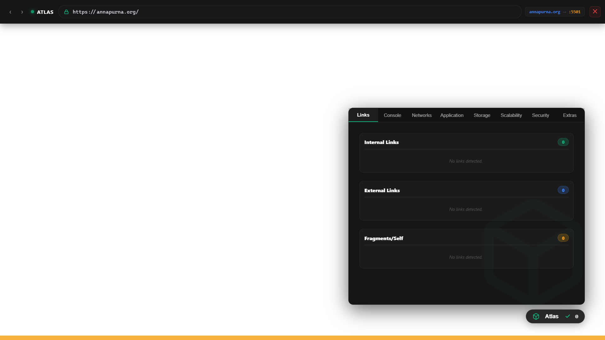

Atlas is a standalone Electron sandbox that runs your app in dangerous conditions (API failures, strict security) while safely mapped to custom production domains on localhost.
Atlas injects a Shadow DOM overlay directly into the browser viewport, housing 6 powerful core modules to test your apps effortlessly.
Run atlas run. It natively detects package.json, handles dependencies, triggers local builds, and securely proxies localhost traffic into an isolated Electron window.
Use the "Stability" panel to inject HTTP 500 errors, specific 5-second latency spikes, or dropped connection packets on-the-fly via the Chrome DevTools Protocol.
Proactive PII Leak detection. Instantly flags leaked AWS Keys, Secrets, Credit Card numbers, Auth Tokens, and strict CORS header mismatches.
Automated desktop captures of your debugging workflows via FFMPEG. Records the exact state of your application UI during crucial failure events.
Inspect requests with a high-performance HTTP dashboard. Track anomaly route latency using internal caches to dynamically flag requests performing worse than average.
View application logs with deep native Stack Traces. Exiting gracefully generates human-readable Markdown Audit files into your project folder.
Three simple steps to launch your full production-ready sandbox.
Create a new project config file automatically.
Configure testing routes and disabled UI tabs.
Start the engine and the Electron shadow DOM.
From a 1-second CLI boot directly into a perfectly safe, production-like Shadow DOM UI.

Built for developers, to develop apps without fear of production breaking.
No more CORS proxy tweaking or manual HTTP header overwrites. Atlas proxies automatically in milliseconds.
By mimicking the exact harsh conditions of your live servers, you secure high SLA expectations confidently.
Extend Atlas's core capabilities by crafting your own custom Data Collectors and UI Tools natively.
Join developers testing production-ready architectures locally today.